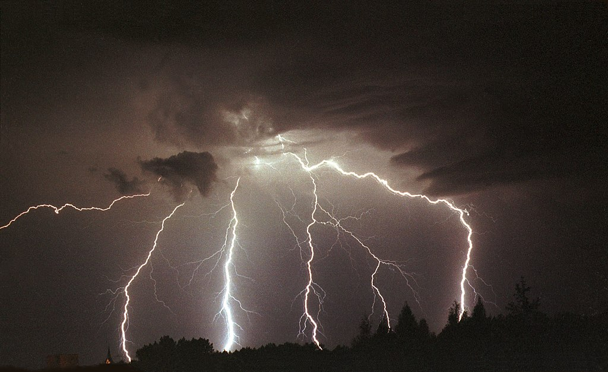

Radar burzowy wykrywa i monitoruje burze poprzez wysyłanie impulsów fal radiowych, które odbijają się od kropel deszczu, śniegu czy gradu. Analiza odbitych fal pozwala określić intensywność opadów oraz ruch burzy.
- Sprawdź inne:
Radar Burzowy - Dlaczego jest Ważny?
Radar burzowy zapewnia ludziom wczesne ostrzeżenia o nadchodzących burzach, umożliwiając szybsze podejmowanie środków ostrożności. Pozwala meteorologom dokładnie śledzić intensywność, lokalizację i ruch burz, co pomaga w informowaniu społeczeństwa o zagrożeniach pogodowych i minimalizowaniu ryzyka związanego z ekstremalnymi zjawiskami atmosferycznymi.
Jak Określić Odległość Burzy?
Aby określić, jak daleko jest burza, można użyć metody liczenia czasu między błyskiem pioruna a dźwiękiem grzmotu:
- Zobacz Błysk: Kiedy zobaczysz błysk pioruna, zacznij liczyć sekundy.
- Usłysz Grzmot: Zatrzymaj liczenie, gdy usłyszysz grzmot.
- Oblicz Odległość: Podziel liczbę sekund przez 3, aby otrzymać odległość burzy w kilometrach (1 sekunda odpowiada około 340 metrom, a więc 3 sekundy to mniej więcej 1 kilometr).
Przykład: Jeśli minie 9 sekund między błyskiem a grzmotem, burza jest około 3 kilometry od Ciebie.
Czego Unikać w Trakcie Burzy?
Podczas burzy istnieje wiele zagrożeń, które mogą stanowić poważne ryzyko dla zdrowia i życia. Oto, czego należy unikać:
- Otwarte Przestrzenie: Unikaj otwartych pól, plaż oraz innych dużych, niezabudowanych terenów. Pioruny często uderzają w najwyższy punkt w okolicy.
- Metalowe Przedmioty: Trzymaj się z dala od metalowych ogrodzeń, słupów i innych przewodzących prąd przedmiotów.
- Woda: Nie kąp się w otwartych wodach, takich jak jeziora czy rzeki. Woda jest doskonałym przewodnikiem prądu elektrycznego.
- Drzewa: Unikaj stania pod drzewami. Choć mogą wydawać się bezpiecznym schronieniem, są częstym celem piorunów.
- Elektryczne Urządzenia: Wyłącz i odłącz wszelkie urządzenia elektryczne, aby uniknąć przepięć i porażenia prądem.

źródło: https://pl.wikipedia.org/wiki/Piorun
Gdzie i Kiedy się Schować?
Bezpieczne schronienie jest kluczowe podczas burzy. Oto kilka miejsc, które oferują ochronę:
- Wewnątrz Budynku: Najlepszym miejscem do schronienia jest solidny budynek z instalacją odgromową. Zamknij okna i drzwi, unikaj stania blisko okien.
- Piwnica: W przypadku szczególnie silnych burz, takich jak tornada, najlepiej schować się w piwnicy lub w innym nisko położonym pomieszczeniu.
Kiedy Najczęściej w Polsce są Burze?
W Polsce burze najczęściej występują w okresie letnim, od maja do września, z kulminacją w czerwcu, lipcu i sierpniu. To właśnie w tych miesiącach panują najkorzystniejsze warunki atmosferyczne, takie jak ciepłe powietrze i duża wilgotność, sprzyjające powstawaniu burz. Szczególnie intensywne burze mogą występować w gorące dni, gdy dochodzi do nagłych zmian temperatury i ciśnienia atmosferycznego.

źródło: https://pl.wikipedia.org/wiki/Burza
Powstawanie burzy
Burze powstają, gdy ciepłe, wilgotne powietrze unosi się i styka z chłodniejszym powietrzem w górnych warstwach atmosfery. Gdy ciepłe powietrze wznosi się, ochładza się i para wodna w nim zawarta kondensuje, tworząc chmury burzowe (cumulonimbus). Proces ten uwalnia ciepło, które dodatkowo napędza wznoszenie się powietrza. W chmurach burzowych mogą powstawać silne prądy wznoszące i opadające, które prowadzą do powstawania piorunów, grzmotów, intensywnych opadów deszczu, gradu, a czasem także tornad.